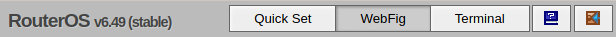
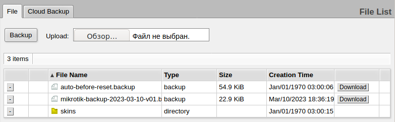
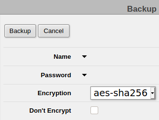

Чтобы в веб-интерфейсе роутера MikroTik hAP Lite сохранить настроенную в роутере конфигурацию, надо перейти в интерфейс WebFig:

В меню надо выбрать пункт Files. Откроется окно сохраненных на роутере файлов. В нем, для создания резервной копии настроек роутера, надо нажать кнопку Backup.

Откроется окно создания резервной копии:

Почему поле ввода имени файла и пароля представляет собой раскрываемый список, известно только высококлассным специалистам по юзабилити компании-производителя роутера MikroTik.